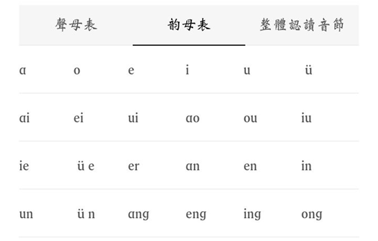

|
授课者：三十 授课地点：竹林私塾 未经允许切勿转载利用 跳过历史，直接讲规律。一般的，格律诗尤其是律诗，遵循六个原则。 整、俪、叶、韵、谐、度。 整，是指每句字数要整齐。或五言，或七言，这已经是格律诗通用的句式了。 俪，是要求在诗中使用骈俪，即对仗。这在律诗中的颔联颈联中是绝对遵守的。 叶，音xie�@，指奇偶句的平仄是相对的。即前句平平平仄仄，后句就是仄仄仄平平，也是约定俗成的原则了。 韵，指要押平声韵。谐，在遵循叶的前提下，对全诗的平仄要有规定。 韵与谐，等会我会重点讲。 度，指全诗字数是一定的。如五绝恒定四句二十字，七律恒定八句五十六字。 凡此为格律诗的六要素。 我们先来说一下押韵。 我们知道，一个字的读音，是由声母与韵母共同构成的。这个韵母，就是我们通常所讲的韵了。 例如“公”字拼成gōng，其中g是声母，ong是韵母。我们再看“东”dōng、“隆”lóng、“宗”zōng、“聪”cōng等，由此可见一斑。  刚刚在网上找的现代的韵母表，应该能让你们看得稍微明白点。 凡是同韵的字都可以押韵。所谓押韵，就是把同韵的两个或更多的字放在同一位置上。一般总是把韵划在句尾，所以又叫韵脚。 我们来看这首诗。 送杜少府之任蜀州 王勃 城阙辅三秦(qín)， 风烟望五津(jīn)。 与君离别意， 同是宦游人(rén)。 海内存知已， 天涯若比邻(lín)。 无为在歧路， 儿女共沾巾(jīn)。 现在让我们以这首诗，来熟悉我刚刚所讲的六要素。 首先这首诗的每一句长短相等，符合整的要求。 再颔联颈联都是对仗，符合俪的要求。 字数符合五律的字数要求四十字，符合度的要求。 叶与谐我之后会讲，现在主要讲韵。 送杜少府之任蜀州 王勃 城阙辅三秦(qín)， 风烟望五津(jīn)。 与君离别意， 同是宦游人(rén)。 海内存知已， 天涯若比邻(lín)。 无为在歧路， 儿女共沾巾(jīn)。 属于韵字的我已经用拼音标出来了。 我们看到，秦，巾，邻，津的韵母都是in，独独人的韵母是en，但这些字是属于同韵的，为什么呢？ 因为古代的发声习惯与我们今人是不全一致的。 即便如此，南方的方言中仍保留有不少古代的发声习惯，其中以闵、粤保存的最完整。 @璎珞 在不在？你用粤语读人这个字试试看，再与别的韵字比较下。 粤语发音都有en的 是韵母为in的那几个字，用粤语韵母都变为了en的意思吗？@璎珞 对啊 人的发音不变 秦(qín)粤语：ceon4 津(jīn)粤语：zeon1 邻(lín) 粤语：leon4 巾(jīn)粤语：gan1 (此处的an在粤语是发en的音) 我们现在的普通话，是以北方的方言修改而来的，但在古代不是这样的。通过璎珞说的，我们大概能了解古代与现代发声习惯的区别。 韵已经说了，再讲下平仄吧。 古代的四声为“平上ˇ去入”。除了平声以外，都是仄声。 这么讲你们不太好理解，我们可以用现代的四声来帮助记忆。现代的四声为阴平，阳平，上ˇ声，去声。即第一声，第二声，第三声，第四声。前两声是平声，后两声是仄声。 入声哪里去了呢？ 入声是古代发生短而急促的字，分散在现代的平声与仄声中，而他们合并了。不过分入平声的字还是比较少的，特别记忆就行。 如离别的别，如合作的合，还有黑色的黑，都是现代读平声古代为入声的字。 挺晚了，今天就讲到这里吧，后天或者大后天有空我讲格律。现在的消化完就可以了。 附件：（自家字典的扫描件，有点模糊，凑合看） 
|